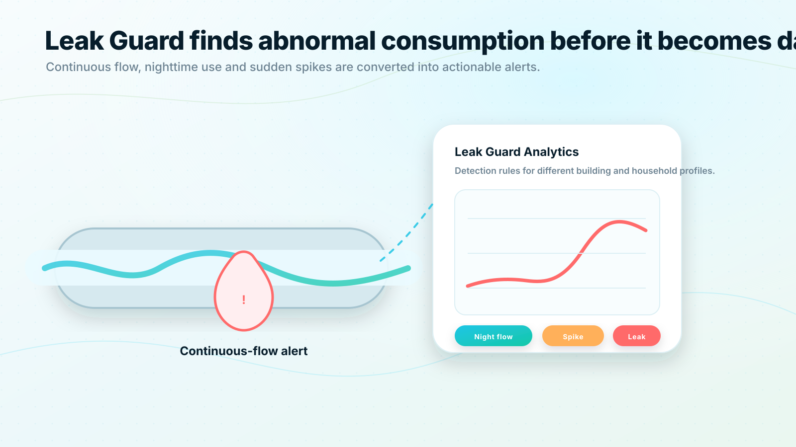

Continuous flow:
The system sees that water use does not return to zero during expected quiet periods.
Leak awareness
Leak Guard turns meter readings into actionable alerts. The system can detect continuous flow, nighttime consumption, unexpected spikes and device events so residents and property managers can respond earlier.

Leak Guard
A small hidden leak can continue for days or weeks if water consumption is not visible. With remote readings and automated rules, QualMeters helps turn unusual consumption into a visible event.
Leak Guard
The system sees that water use does not return to zero during expected quiet periods.
Repeated night consumption patterns can indicate a leak or running fixture.
A sharp increase compared with baseline use can trigger review.
Missing readings or communication failures can be handled as operational alerts.
Consumption that differs strongly from similar households can be highlighted with care.
Leak Guard
Leak Guard
Use QualMeters to create an alerting process that supports residents, property managers and municipal stakeholders.
Explore Leak GuardSales consultation
Share your building type, meter count, communication requirements and integration needs. QualMeters will help you map the right deployment model and next steps.
No obligation. We will start by understanding your existing meters, buildings and goals.
 Request a demo
Request a demo